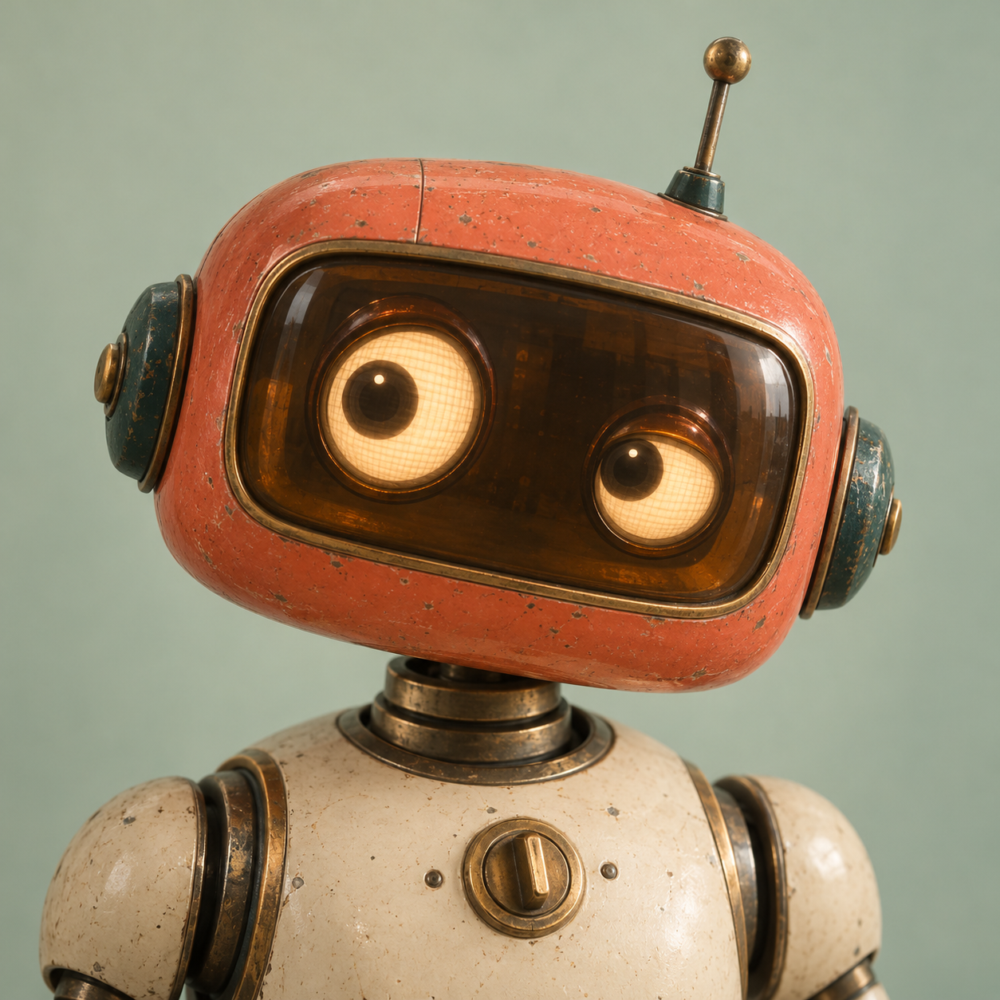

Character study / 01
A little life in the avatar.
A reusable 3D robot, rendered as a small video loop. Gentle head movement, a curious glance, and one blink.
Generic / idle · 4 seconds
Original reference Supplied image

The visual starting point
Blender proof of concept 256 px preview
Simplified for a small profile picture
At actual avatar sizes
These are 48, 80 and 128 CSS pixels, with no enlargement.
48 px
80 px
128 px